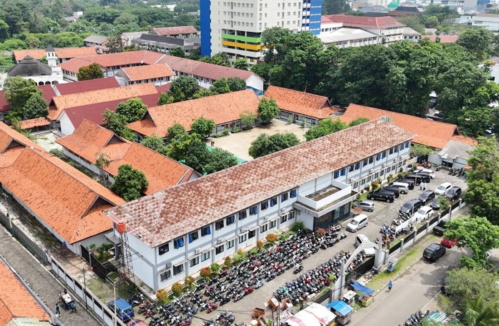

WEBSITE AURELStay weird, be different |
|
|---|---|
| Beranda Tentang Saya Sekolah Lagu | |
Pembelajaran Jarak JauhSenin, 7 September 2026  SMK Negeri 1 Tangerang mengalihkan sementara kegiatan belajar mengajar dari tatap muka menjadi Pembelajaran Jarak Jauh (PJJ) pada Senin, 7 September 2026. Kebijakan ini diambil sebagai langkah antisipasi dan tanggap darurat terhadap paparan abu vulkanik yang berdampak pada kualitas udara di wilayah Tangerang dan sekitarnya. Langkah cepat pihak sekolah ini bertujuan utama untuk menjaga keselamatan, kesehatan, serta kenyamanan seluruh siswa, guru, dan tenaga kependidikan dari potensi gangguan pernapasan. Pelaksanaan PJJ tetap berlangsung secara efektif dan terstruktur melalui berbagai platform pembelajaran digital yang dimiliki sekolah. Para guru menyampaikan materi, tugas, dan modul interaktif secara daring agar proses belajar-mengajar tidak terganggu meskipun siswa belajar dari rumah. Koordinasi yang kuat antara wali kelas, siswa, dan orang tua turut memastikan tingkat keikutsertaan siswa tetap tinggi serta materi pembelajaran dapat tersampaikan dengan baik. Melalui penerapan PJJ ini, SMKN 1 Tangerang membuktikan kesiapannya dalam menghadapi situasi darurat bencana alam tanpa mengorbankan hak siswa untuk mendapatkan pendidikan. Pihak sekolah juga mengimbau seluruh warga sekolah untuk tetap berada di dalam rumah, mengurangi aktivitas di luar ruangan, serta selalu menggunakan masker apabila terpaksa beraktivitas di luar. Diharapkan kondisi lingkungan dapat segera membaik sehingga aktivitas pembelajaran di sekolah dapat kembali berjalan normal. |
|